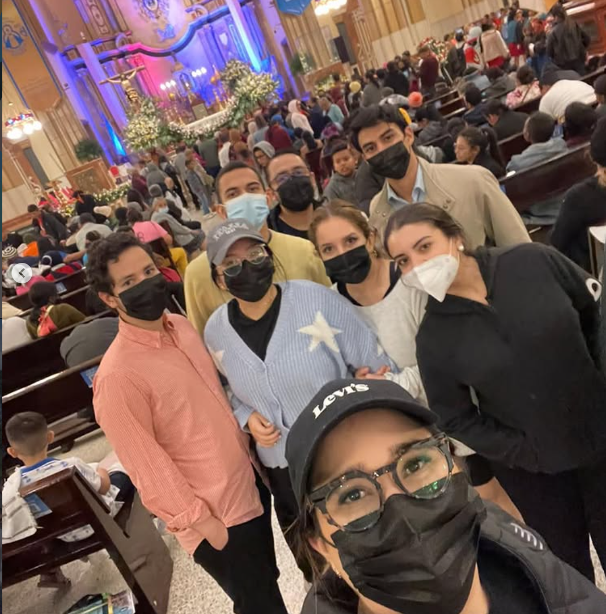
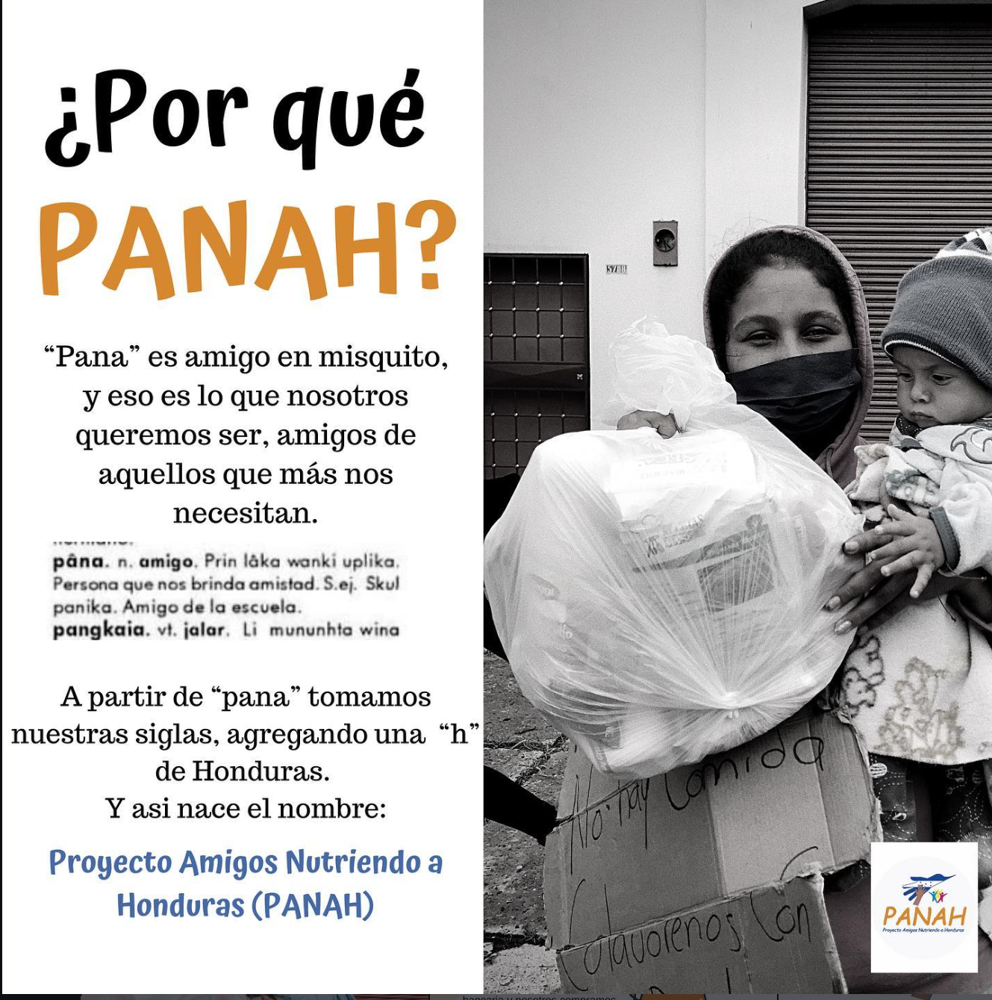

PANAH (Proyecto Amigos Nutriendo a Honduras) es una organización sin fines de lucro comprometida con ayudar a quienes más lo necesitan en Honduras.
Trabajamos para brindar apoyo y nutrición a comunidades vulnerables, con el objetivo de generar un impacto real y positivo en la vida de las personas.
Ayudar a los que más lo necesitan a través de donaciones y proyectos de nutrición sostenibles. Creemos que una alimentación adecuada es la base para que las familias hondureñas puedan salir adelante, estudiar, trabajar y construir un mejor futuro.
Ser una organización referente en Honduras en la lucha contra la desnutrición, reconocida por la transparencia de su trabajo y por el impacto duradero que genera en cada comunidad donde interviene.

PANAH nació de la iniciativa de un grupo de amigos que, al ver de cerca la necesidad de nutrición en comunidades vulnerables de Honduras, decidieron unir esfuerzos para crear un cambio sostenible. Lo que comenzó como pequeñas jornadas de ayuda entre conocidos se convirtió, con el tiempo, en un proyecto organizado con metas claras y una comunidad de donantes cada vez más grande.
Desde entonces, hemos trabajado de la mano con líderes comunitarios para identificar a las familias que más lo necesitan, asegurando que cada donación llegue a quien realmente debe llegar.
¿Quieres ser parte del cambio?
Dona ahora